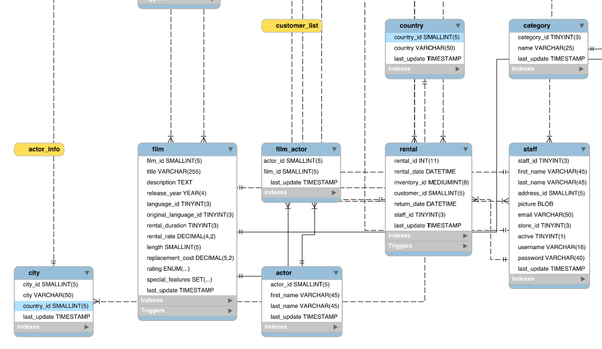
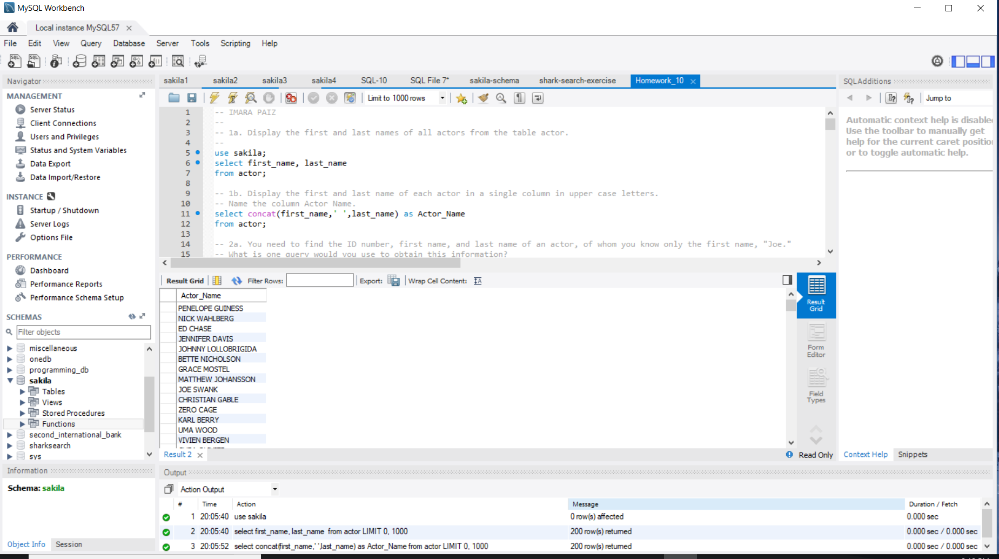
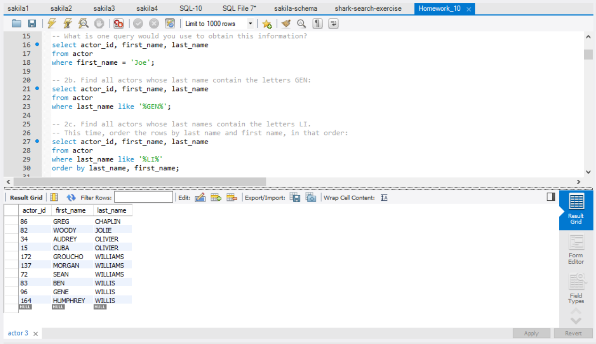
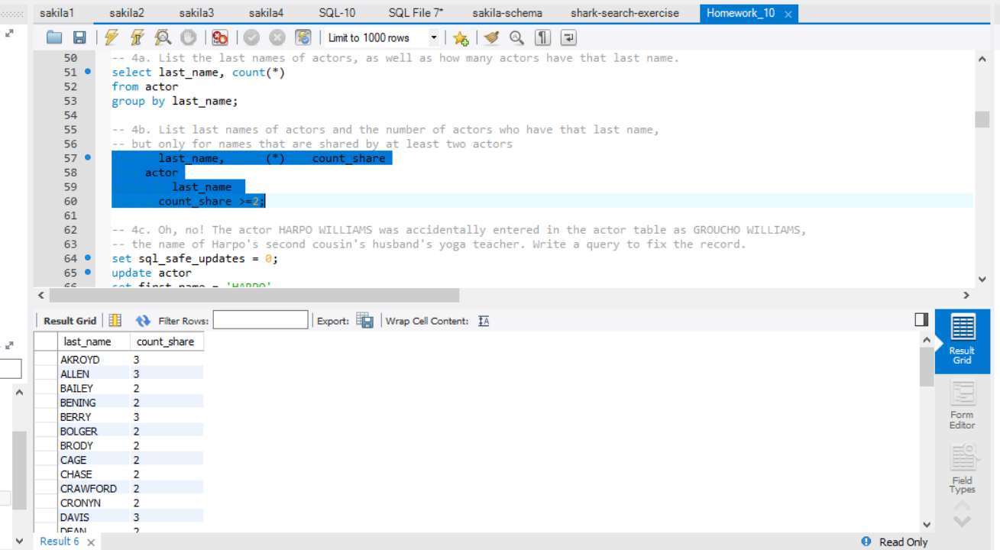
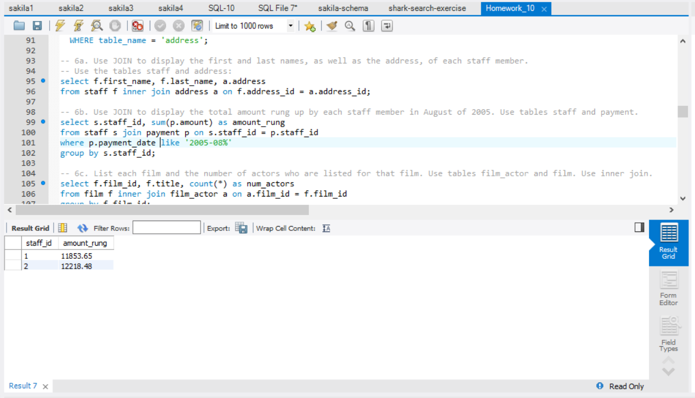
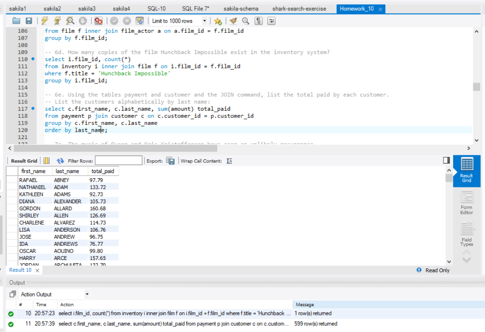
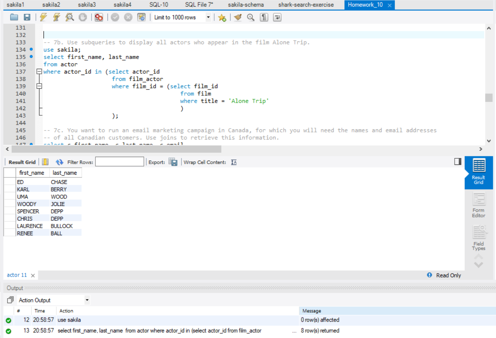
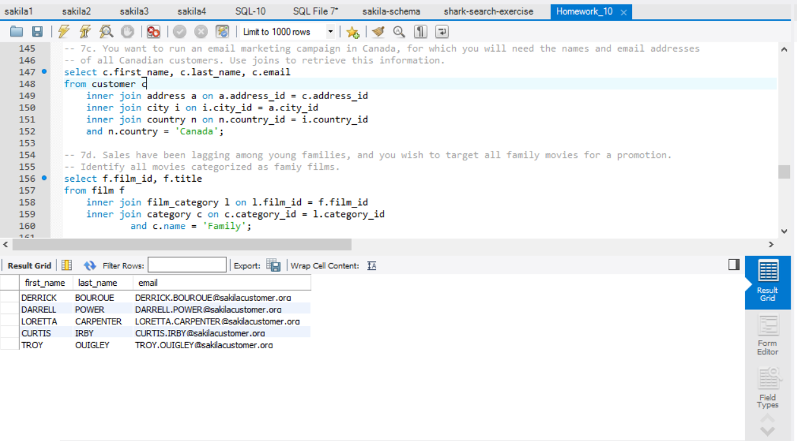
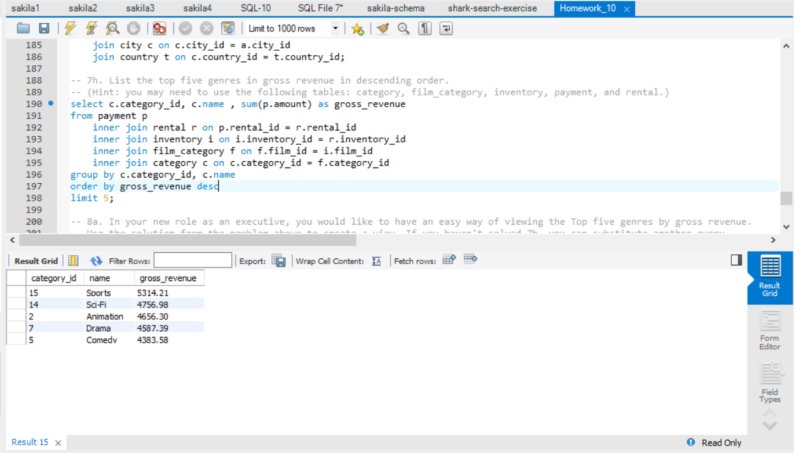
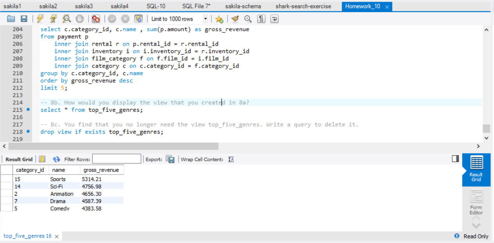

The Sakila Database
The Sakila Database consist of relationships among Actors, Films, Customers, Rentals, Countries.
The following questions need to be answered based on the data structure.

-
Display the first and last name of each actor in a single column in upper case letters. Name the column Actor Name.

-
Find all actors whose last names contain the letters LI. This time, order the rows by last name and first name, in that order:

-
List last names of actors and the number of actors who have that last name, but only for names that are shared by at least two actors.

-
Use JOIN to display the total amount rung up by each staff member in August of 2005. Use tables staff and payment.

-
Using the tables payment and customer and the JOIN command, list the total paid by each customer.
List the customers alphabetically by last name:

-
Use subqueries to display all actors who appear in the film Alone Trip.

-
You want to run an email marketing campaign in Canada, for which you will need the names
and email addresses of all Canadian customers. Use joins to retrieve this information.

-
List the top five genres in gross revenue in descending order.
(Hint: you may need to use the following tables: category, film_category, inventory, payment, and rental.)

-
In your new role as an executive, you would like to have an easy way of viewing the Top five genres by gross revenue.
Use the solution from the problem above to create a view. If you haven't solved 7h, you can substitute another query to create a view.

Data Source
Sakila Database is an open source and free database in MySQL.
Built in MySQL Workbench 6.3